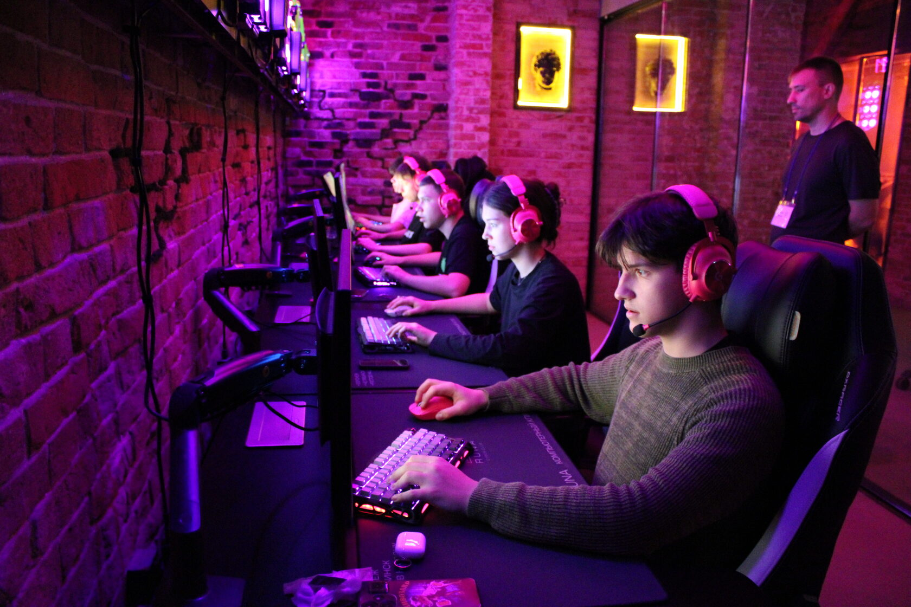

Кибертурнир по CS2
208.12.2025

6 декабря в киберспортивном клубе «Runa» состоялся турнир по дисциплине Counter-Strike 2, организованный Центром цифрового образования детей «IT-куб». Команды показали высочайший уровень игры, невероятную волю к победе и настоящий командный дух. Борьба была напряжённой до самого конца! По итогам напряжённых игр были определены победители и призёры: 1 МЕСТО | NOVA NATION — Ваше мастерство и хладнокровие в решающие моменты впечатлили всех! Браво, чемпионы! 2 МЕСТО | TRY.HARD — Вы доказали, что упорство и правильный настрой творят чудеса. Достойнейшие соперники! 3 МЕСТО | LF — Отличная игра и железная воля! Вы заслужили эту почётную ступень пьедестала. 4 МЕСТО | ZERO CLAN — Без вашего упорного сопротивления турнир не был бы таким зрелищным. Респект за классную игру! Поздравляем победителей и благодарим все команды за участие и честную борьбу. Центр цифрового образования детей «IT-куб» выражает признательность руководству и сотрудникам киберспортивного клуба «Runa» за предоставленную современную площадку, техническое обеспечение и содействие в организации мероприятия, что стало залогом его успешного проведения. Надеемся на дальнейшее плодотворное сотрудничество в развитии киберспортивного движения. Ждите анонсов следующих турниров. Мы обязательно повторим! Полный фотоотчет с кибертурнира доступен по ссылке: https://vk.com/album-194934545_309430973